Python
基本知识
字面量
在代码中，被写下来的固定的值
常见的字面量数据类型
- 数字 整数 浮点数 复数 布尔
- 字符串 双引号包围 “字符串”
- 列表
- 元组
- 集合
- 字典
1 | # 字面量（有空格） |
写在print语句中的是字面量
注释
单行注释
1 | # 我是单行注释（建议有空格） |
多行注释
1 | """我是多行注释一般用于开头解释类和程序 |
变量
记录数据的盒子,值可以改变
1 | # 变量名 = 变量值 |
数据类型
变量没有类型，变量中存储的数据有类型
type()语句
用于查看数据的类型的函数
使用print直接输出
1 | print(type("str")) |
用变量存储返回的结果
1 | str_type = (type("123456")) |
数据类型的转换
1 | # 转为整数 |
任何语句都可转换成字符串
标识符
名字
命名规则
- 英文 大小写敏感
- 中文 不推荐使用
- 数字 不可以作为开头
- 下划线 _
- 不可以使用关键字
运算符
数学运算符
| 运算符 | 操作 |
|---|---|
| + | 加法 |
| - | 减法 |
| * | 乘法 |
| / | 除法 |
| // | 取整除 |
| % | 取余数 |
| ** | 指数 |
赋值运算符
| 运算符 | 操作 |
|---|---|
| = | 赋值 |
复合赋值运算符
| 运算符 | 操作 |
|---|---|
| += | c+=a 等价于 c=c+a |
| -= | c-=a 等价于 c=c-a |
| *= | c*=a 等价于 c=c*a |
| /= | c/=a 等价于 c=c/a |
| %= | c%=a 等价于 c=c%a |
| **= | c**=a 等价于 c=c **a |
| //= | c//=a 等价于 c=c//a |
字符串
定义
-
单引号
1
name='hhhh'
可以内含双引号
-
双引号
1
name2 = "hhhhhh2"
可以内含单引号
-
三引号
1
2
3# 和多行注释一样
name3 = """hhhhh
hhh3"""
可以用 \ 解除效用 变成普通字符串
1 | name = '"123456' |
字符串拼接
使用+号
1 | print("123"+"456") |
字符串没有办法和其他类型拼接
字符串格式化
方法一：
1 | name = "kjkjk" |
通过占位的形式完成拼接，%表示占位，s表示将变量变成字符串放入占位的地方
| 格式符号 | 转化 |
|---|---|
| %s | 转化为字符串放入占位位置 |
| %d | 转化为整数放入占位位置 |
| %f | 转化为浮点放入占位位置 |
方法二:
不限数据类型，不做精度控制，适合对精度没有要求时快速使用
1 | f"...{变量} " |
1 | num1=11 |
格式化的精度控制
m.n 控制数度的宽度和精度，m控制宽度，但当宽度小于自身时不生效，n控制精度会进行四舍五入
1 | num1=11 |
表达式格式化
表达式：一条具有明确执行结果的代码语句
1 | print("1 * 1 = %d" % (1*1)) |
数据输入
input语句
1 | print("what is your name?") |
等价于：
1 | name = input("what is your name?\n") |
input语句不管输入什么都统统当作字符串看待，可自行进行数据转换
1 | age = input("what is your age?\n") |
判断语句
布尔类型和比较运算符
布尔类型的字面量：
True ：表示真
False：表示假
比较运算符：
== , > , < , >= ,<= ,!=
1 | bool_1 = True |
1 | num1 = 10 |
字符串也可以进行 == ，! = 比较
if语句
if [条件] ：
条件成立时执行的内容
1 | age = 18 |
缩进！！！
1 | age = 10 |
if else语句
if 条件：
条件成立时执行的内容
else：
条件不满足时执行的内容
1 | age = 10 |
if elif else语句
if 条件：
条件1成立时执行的内容
elif 条件2:
条件2成立时执行的内容
elif 条件n：
条件 n成立时执行的内容else：
上述条件都不满足时执行的内容
1 | height = int(input("请输入你的身高（cm）：")) |
多条件判断下，条件互斥，只要有一个条件满足，则其他条件不成立，语句不执行
1 | if int(input("请输入你的身高（cm）："))<120: |
判断语句的嵌套
if 条件1:
条件1成立时执行的内容
条件1成立时执行的内容
if 条件2:
条件2成立时执行的内容
条件2成立时执行的内容
not表示取反
循环语句
while循环
while 条件:
条件满足要做的事情1 条件满足要做的事情2
条件满足要做的事情3
1 | i = 0 |
1 | i = 1 |
小脚本：
猜数字，猜错判断大于小于，猜对输出猜的次数
1 | import random |
嵌套
while 条件1:
条件1满足要做的事情1 条件1满足要做的事情2
条件1满足要做的事情3
…
while 条件2:
条件2满足要做的事情1 条件2满足要做的事情2
条件2满足要做的事情3
…
小脚本：
打印九九乘法表
前置知识：
1 | #print输出如何不换行 |
脚本：
1 | lh = 1 |
for循环
for 临时变量 in 待处理的数据集:
循环条件满足时候执行的代码
1 | name = "abcdefg" |
无法自定义无限循环，数据集不可能无限大
小脚本：
统计字符串中有多少个字母a
1 | str = input("please input your str") |
tips:
关于临时变量的作用范围，规范上，临时变量是不能在for循环外部进行访问，但是实际上，是可以访问到的
range语句
获得一个数字序列，搭配for循环食用
range(num)
获取一个从0 开始到num结束的数字序列（不包含num本身）
range(num1，num2)
获取一个从num1开始到num2结束的数字序列（不包含num2本身）
range(num1，num2，step)
获取一个从num1开始到num2结束的数字序列（不包含num2本身）,数字间的步长以step为标准，step默认为1
1 | for x in range(10): |
1 | for x in range(2,8): |
1 | for x in range(2,8,2): |
for循环嵌套
控制空格缩进
for 临时变量1 in 待处理的数据集:
循环条件1满足时候执行的代码
for 临时变量2 in 待处理的数据集:
循环条件2满足时候执行的代码
for循环和while循环可以互向嵌套
小脚本：
使用for循环打印九九乘法表
1 | for rh in range(1,10): |
循环中断
continue
中断所在本层循环，直接进入下一次循环
1 | for i in range(1,100): |
跳过语句2，不执行
break
直接结束所在本层循环
函数
封装特定功能，实现接口，避免重复性劳动，可以重复使用
1 | # 内置函数 统计字符串长度 |
定义
def 函数名字(传入参数):
函数体
return 返回值
1 | def say_hi():# 可以没有传入参数 |
先定义，再使用，在程序中调用函数才可以进行工作
1 | def say_hi(): |
1 | def add(x,y): |
上述例子中，x和y是形式参数，4和5是实际参数
没有返回值，则返回值类型为NoneType，表示空，无意义，false
None的应用
-
函数的返回值
-
if判断语句
-
声明无初始内容的变量
函数可以嵌套调用，过程类似于栈
多个返回值
python的函数可以实现一次性返回多个值
return 返回值1，返回值2
变量1，变量2 = 函数
1 | def test1(x,y): |
传入参数
位置参数
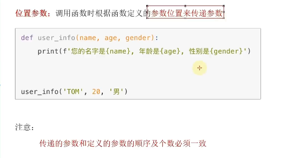
关键字参数
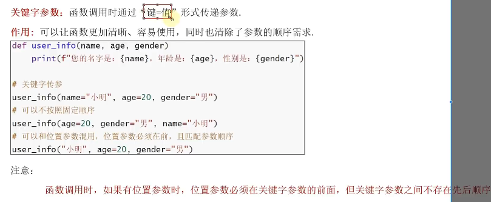
缺省参数

不定长参数
位置传递的不定长
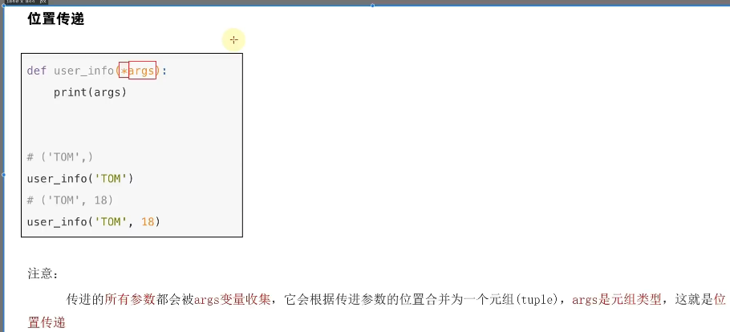
关键字传递
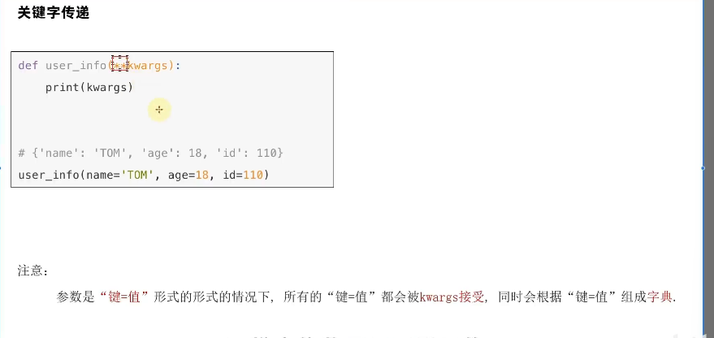
函数作为参数传递
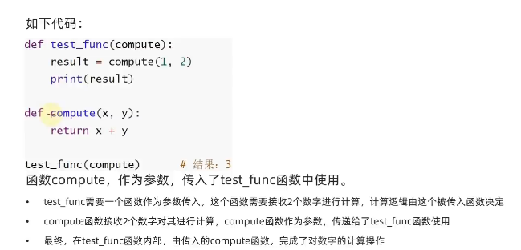
传递的是计算逻辑
匿名函数
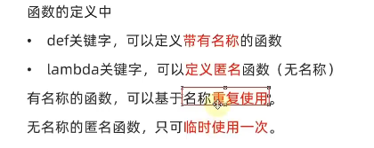
lambda 传入参数: 函数体（只能有一行代码）
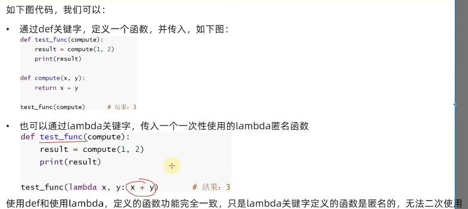
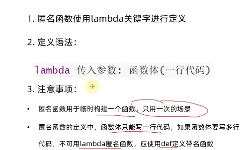
数据容器
一种可以容纳多份数据的数据类型
根据特点的不同可以划分为
- 列表
- 元组
- 字符串
- 集合
- 字典
列表（list）
定义
变量名 = [元素1,元素2,…]
空列表：
变量名 = []
变量名 = list()
列表中的每个数据叫作元素
1 | name_list = ["name1", "name2", "name3"] |
也可以嵌套列表
1 | my_list = [[1, 2, 3], [4, 5, 6], [7, 8, 9]] |
元素索引
利用下标索引进行取用
正向：从左到右，从前向后，从0开始，依次递增
负向：从右向左，从后向前，从-1开始，依次递减
不可以超出范围
1 | my_list = ["zhangsan", "lisi", "wangwu"] |
1 | my_list = ["zhangsan", "lisi", "wangwu"] |
嵌套列表
多层下标索引即可遍历,不可以超出范围
1 | my_list = [[1, 2, 3], [4, 5, 6], [7, 8, 9]] |
常用方法
class中的内置函数
查询
查询指定元素在列表中的下标(正向索引)，如果找不到就报错
列表.index(元素)
1 | my_list = [[1, 2, 3], [4, 5, 6], [7, 8, 9]] |
修改
修改指定下标位置的值
列表[下标] = 值
可以正向，也可以反向
1 | my_list = ["zhangsan", "lisi", "wangwu"] |
插入
在指定下标索引位置插入指定元素
列表.insert(下标,元素)
1 | my_list = ["zhangsan", "lisi", "wangwu"] |
追加
在列表尾部添加元素
追加一个元素：
列表.append(元素)
1 | my_list = ["zhangsan", "lisi", "wangwu"] |
1 | my_list = ["zhangsan", "lisi", "wangwu"] |
追加一批元素（新的列表）：
列表1.extend(列表2)
1 | my_list = ["zhangsan", "lisi", "wangwu"] |
删除
del列表[下标]
1 | my_list = ["zhangsan", "lisi", "wangwu"] |
列表.pop(下标)
会返回对应下标的元素内容
1 | my_list = ["zhangsan", "lisi", "wangwu"] |
删除某元素在列表中的第一个匹配项
列表.remove(元素)
1 | my_list = ["zhangsan", "lisi", "wangwu", "zhangsan"] |
清空
列表.clear()
1 | my_list = ["zhangsan", "lisi", "wangwu", "zhangsan"] |
统计元素个数
统计指定元素在列表中的个数
列表.count(元素)
返回值即为数量
1 | my_list = ["zhangsan", "lisi", "wangwu", "zhangsan"] |
列表元素的数量
len(列表)
返回值即为数量
不是list内部的函数
1 | my_list = ["zhangsan", "lisi", "wangwu", "zhangsan"] |
特点
- 列表有上限，但上限很大
- 可以容纳不同类型的元素
- 数据有序存储
- 允许重复数据存在
- 可以修改
循环遍历
while循环遍历
下标索引的方式进行取用元素
1 | my_list = ["zhangsan", "lisi", "wangwu", "zhangsan"] |
for循环遍历
1 | my_list = ["zhangsan", "lisi", "wangwu", "zhangsan"] |
元组
可以存储多个不同类型的元素，但是不可以修改
定义
变量 = (元素,元素,元素, …)
空元组：
变量 = ()
变量 = tuple()
1 | t1 = (1,"hello",True) |
1 | t4= ("hello") |
当元组中只有一个元素的时候要求在其后写上一个逗号否则不是元组
嵌套元组
1 | t6= ((1,2,3),(4,5,6),(7,8)) |
下标索引
和list一样，元组也可以通过下标索引进行取用元素，写法相同
1 | t6= ((1,2,3),(4,5,6),(7,8)) |
相关操作
查找指定元素
查找并返回指定元素的下标
元组. index(x)
1 | t6= ((1,2,3),(4,5,6),(7,8)) |
统计元素个数
1.统计并返回元组中指定元素的个数
元组.count()
1 | t6= ((1,2,3),(7,8),(4,5,6),(7,8)) |
2.统计并返回元组中的元素个数
len(元组)
1 | t6= ((1,2,3),(7,8),(4,5,6),(7,8)) |
遍历
for循环
1 | t6= ((1,2,3),(7,8),(4,5,6),(7,8)) |
while循环
1 | t6= ((1,2,3),(7,8),(4,5,6),(7,8)) |
元组里的元素不可以修改，但是在元组里嵌套的list的元素是可以修改的
1 | t6= ((1,2,3),(7,8),[1,2,3,4,"hello"],(7,8)) |
特点
- 可以容纳不同类型的元素
- 数据有序存储
- 允许重复数据存在
- 不可以修改
字符串
字符的容器，一个字符串可以存放任意数量的字符
下标索引在字符串中也可以使用，正向从0开始，负向从-1开始
1 | str = "abcdefg" |
字符串是不可修改的数据容器，只读
常用方法
查找指定元素的下标
查找并返回指定元素的下标：字符串.index(x)
1 | str = "abcdefg" |
字符串替换
将字符串中指定的内容替换成指定内容，并返回替换后新的字符串
字符串.replace(字符串1,字符串2) 将字符串1换成2形成新的字符串
1 | str = "abcdefg" |
字符串分割
字符串.split(分隔符字符串)
按照指定的分隔符字符串，将字符串划分为多个字符串，并存到列表对象中
字符串本身不变而是得到一个列表对象
1 | str = "hello world i am klklkl" |
规整操作
去除前后空格
字符串.strip()
1 | str = " hello world i am klklkl " |
去除前后指定字符串
字符串.strip(字符串) 将传入的字符串划分成小串，只要头尾含有就去除
1 | str = "12 hello world i am klklkl 21" |
统计指定字符串出现的次数
字符串.count(字符串)
统计字符串的长度
len(字符串)
遍历
for循环
同上
while循环
同上
特点
- 只可以存储字符串
- 长度有上限，取决于内存大小
- 数据有序存储
- 允许重复数据存在
- 不可以修改
序列
内容连续，有序，可以使用下标索引的一类数据容器
列表、元组、字符串均可以视为序列
切片
从一个序列中取出一个子序列，形成一个新的序列，不修改原来的序列
语法：
序列[起始下标: 结束下标:步长]
起始下标：从何处开始，可以留空表示从头
结束下标：到那里结束，不包含结束下标位置，可以留空表示截去到尾部
步长：取元素的间隔，默认为1，可以省略不写
1 | my_list1 = [0,1,2,3,4,5,6] |
集合
上述介绍的数据容器：列表、元组、字符串都支持重复元素，而集合不支持重复元素，顺序无法保证，自带去重功能
定义
变量 = {元素1,元素2,元素3 ,…}
空集合
变量 = set()
{}是空字典
1 | my_set = {1,2,3,1,2,3,4,5,6} |
常用操作
不支持下标索引访问，可修改
添加
集合.add(元素)
1 | my_set = {1,2,3,1,2,3,4,5,6,"klklkl"} |
移除
从集合中移除指定元素，同时集合被修改
集合.remove(元素)
1 | my_set = {1,2,3,1,2,3,4,5,6,"klklkl"} |
从集合中随机取出一个元素，同时集合被修改，返回移除的元素，元素被移除
集合.pop()
1 | my_set = {1,2,3,1,2,3,4,5,6,"klklkl"} |
清空
集合.clear()
取差集
集合1.differrence(集合2)
取出集合1和集合2的差集（集合1有集合2没有的），返回一个新集合
1 | set1 = {1,2,3,4,5} |
去差集
集合1.difference_update(集合2)
消除集合1和集合2内相同的元素，集合1被修改集合2不变
1 | set1 = {1,2,3,4,5} |
集合合并
集合1.union(集合2)
集合1和2合并成一个新的集合，集合1和2不变
1 | set1 = {1,2,3,4,5} |
统计元素数量
len(集合)
遍历
不支持下标索引，因此不可以用while循环
1 | set2 = {1 ,3,5,7,8,9} |
字典
含有两个数据，一个名为key，另一个为Value，字典可以通过key找到与其对应的value
不允许元素重复，不可以使用下标索引，只可以通过key值取得对应的Value
定义
1 | 变量 = {key:value , key:value ,....} |
获取value
通过key值取得对应的Value
字典.[key]
1 | dict_1 = {"liming": 56, "wanglikong": 99, "zhoujielin": 88, "lindaju": 77} |
字典的嵌套
key不能为字典，value可以是任意数据
1 | stu_score_date = { |
常用操作
增加元素
字典[key] = value
字典被修改，增加了新元素
1 | dict_1 = {"liming": 56, "wanglikong": 99, "zhoujielin": 88, "lindaju": 77} |
更新元素
字典[key] = value
字典被修改
如果key存在则为更新，不存在即为修改
1 | dict_1 = {"liming": 56, "wanglikong": 99, "zhoujielin": 88, "lindaju": 77} |
删除元素
字典.pop(key)
删除字典中key的内容，并返回key对应的value
1 | dict_1 = {"liming": 56, "wanglikong": 99, "zhoujielin": 88, "lindaju": 77} |
清空元素
字典.clear()
1 | dict_1 = {"liming": 56, "wanglikong": 99, "zhoujielin": 88, "lindaju": 77} |
获取全部key
字典.keys()
1 | dict_1 = {"liming": 56, "wanglikong": 99, "zhoujielin": 88, "lindaju": 77} |
遍历字典
方法1:
1 | dict_1 = {"liming": 56, "wanglikong": 99, "zhoujielin": 88, "lindaju": 77} |
方法2:
1 | dict_1 = {"liming": 56, "wanglikong": 99, "zhoujielin": 88, "lindaju": 77} |
不支持下标索引，不适用于while循环
统计元素数量
len(字典)
特点
- 可以容纳多个数据，容纳不同类型的数据。
- 每一份数据是keyvalue键值对
- 可以通过key获取value
- 不允许重复key存在
- 不支持下标索引
- 可以修改
- 支持for循环不支持while循环
总结
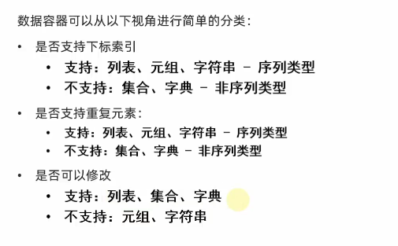
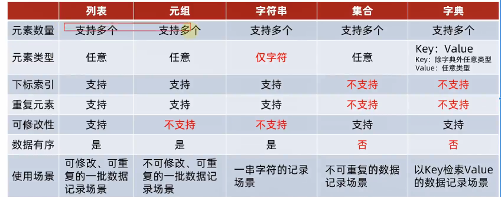
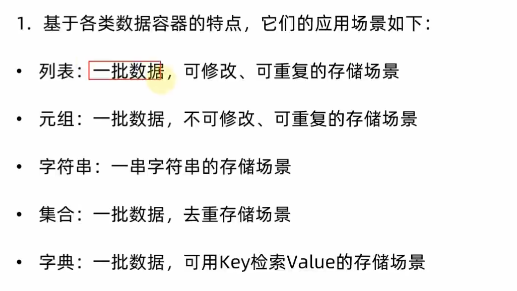
通用操作
下面对于字典的操作基本是对于key值的操作
len
统计元素个数
max 和min
获取最大元素，获取最小元素
对于字典，获取的是最大或最小的key
类型转换
-
list(容器)
转列表
-
str(容器)
转字符串
-
tuple(容器)
转元组
-
set(容器)
转集合
sorted
排序，并返回列表对象的结果，字典会丢失value
sorted(容器) 正向排序，从小到大
sorted(容器，reverse = True) 反向排序
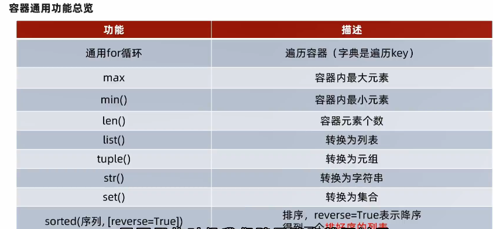
文件
文件编码：编码的技术，记录了如何将内容翻译成二进制以及如何解密二进制，不同的编码对同一文本的翻译不同
常见文件编码：
- UTF-8 全球通用 默认编码
- GBK
- Big5
读取文件
- 打开文件
- 读写文件
- 关闭文件
打开文件
open(name,mode,encoding)
name：文件的名字可以包含路径，字符串表示
mode：设置打开文件的模式，只读，写入，追加等
encoding：编码格式（推荐使用UFT-8）
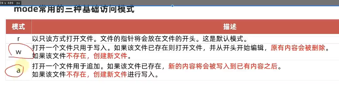
1 | f = open("D:/桌面/test.txt","r",encoding = "UTF-8") |
encoding不是第三个参数，因此要使用关键字参数
读取文件
文件对象.read(num)
num:表示要读取的数据的长度，单位是字节，如果没有传入num，那么就表示读取文件中所有数据
1 | f = open("D:/桌面/test.txt","r",encoding = "UTF-8") |
连续读取会从上一次读取的末尾开始读取
文件对象.readlines()
按照行的方法把文件中的内容进行一次性读取，并返回一个列表，其中每一行的数据为一个元素
1 | f = open("D:/桌面/test.txt","r",encoding = "UTF-8") |
可以使用for循环读取行
1 | f = open("D:/桌面/test.txt","r",encoding = "UTF-8") |
连续读取会从上一次读取的末尾开始读取
文件对象.readline()
一次读取一行内容
1 | f = open("D:/桌面/test.txt","r",encoding = "UTF-8") |
写入文件
文件对象.write()
把内容写入缓冲区
文件对象.flush()
内容刷新，写入硬盘中的文件
close方法内置了flush功能
1 | f = open("D:/桌面/test.txt","w",encoding = "UTF-8") |
关闭文件
文件对象.close()
解除文件占用
with open(name,mode,encoding) as 文件对象:
操作
完成操作后自动关闭文件，避免遗忘close方法
1 | with open("D:/桌面/test.txt","r",encoding = "UTF-8") as f: |
类
定义
class 类名:
satement1
satement2
…
1 | class Student: |
初始化函数
1 | def __init__(self, tmp_name, tmp_school, tmp_gener, tmp_id): |